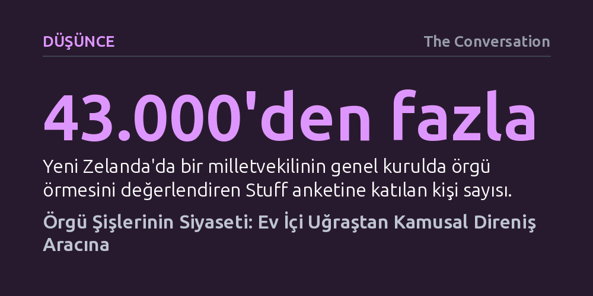

DUSUNCE · The Conversation · 2026-09-11
Sessiz bir ev içi uğraş sayılan örgü, Fransız Devrimi'nden modern parlamentolara uzanan köklü bir siyasi protesto ve görünürlük aracıdır. Bu incelikli eylem, sesini duyuramayan toplumsal gruplara faillik kazandırarak kamusal alanda güçlü bir temsil olanağı sunar.
Protestonun yalnızca gürültülü çatışmalarla değil, ev içi görülen sakin pratikler üzerinden de iktidarı sorgulatan güçlü bir kamusal mesaja dönüşebileceğini gösterir.

Yeni Zelanda parlamentosu koridor kavgalarına veya meclis basamaklarına kadar sürülen traktörlere alışkın olsa da geçtiğimiz günlerde çok daha sessiz ama bir o kadar kutuplaştırıcı bir tartışmaya sahne oldu. İşçi Partisi milletvekili Deborah Russell, genel kuruldaki soru-cevap oturumu esnasında yün bir yelek örerken görüntülendi. Yapılan geniş katılımlı bir ankette yurttaşların yaklaşık yarısı bu davranışı kabul edilemez ve meclis ciddiyetine aykırı buldu.
Russell ise kendini savunurken örgünün sakinleşmesine ve oturuma odaklanmasına yardımcı olduğunu belirtti; dahası bu eylemin salonda yürütülen tartışmalardan duyduğu rahatsızlığı sessizce dışa vurma yöntemi olduğunu vurguladı. Evin mahrem ve sakin köşesine ait görülen bir el işinin devletin en yüksek karar organında sergilenmesi, kamusal adabın sınırları ile siyasi temsil biçimleri arasındaki gerilimi yeniden alevlendirdi.
Örgü eyleminin siyasetle teması Deborah Russell ile başlamış değil; aksine yüzyıllara yayılan köklü ve çarpıcı bir geçmişe dayanıyor. Fransız Devrimi sırasında "tricoteuse" olarak anılan kadınlar, giyotinle gerçekleştirilen kamuya açık infazları izlerken ellerindeki şişlerle örgü örmeye devam ederek bu eylemi devrimci bir varoluş ve meydan okuma gösterisine dönüştürmüştü. Birinci Dünya Savaşı'nda ise Belçikalı kadınların örgü ilmeklerine özel şifreler gizleyerek Alman birliklerinin ve topçularının hareketlerini müttefik istihbaratına aktardığı biliniyor.
Yeni Zelanda'nın kendi siyasi tarihinde de örgü önemli dönüm noktalarında belirdi. 1880'lerde kadınların genel kuruldaki dinleyici locasından tartışmaları örgü örerek takip ettiğini gösteren arşiv kayıtları mevcut. Hatta kadınların oy hakkı mücadeleleri sırasında bir yün yumağının meclis başkanının kürsüsüne kadar yuvarlandığı, yarım kalmış bir giysinin milletvekillerinin önüne düştüğü tarihi kayıtlara geçmiş durumda.
Parlamentoda bizzat vekil olarak örgü ören ilk kadın olan tanınmış feminist Marilyn Waring, bu eylemini bilinçli bir siyasi tutum olarak nitelendirmişti. 1955 yılında Nelson demiryolu hattının kapatılmasını protesto eden kadınlar ise rayların üzerine oturup on gün boyunca aralıksız örgü örerek sivil itaatsizliğin en özgün örneklerinden birine imza attı.
Örgünün protesto kültüründeki yeri sadece tarihsel anekdotlardan ibaret kalmayıp günümüzde "craftivism" (zanaat aktivizmi) adıyla kuramsal bir çerçeveye kavuştu. 2009 yılında İngiliz aktivist Sarah Corbett tarafından kurulan bu hareket, toplumsal itirazın gürültülü ve çatışmacı sloganlar yerine sabır, el emeği ve özen üzerinden yürütülebileceğini savunuyor.
2017 yılında Washington'daki Kadın Yürüyüşü'nde yüz binlerce kişinin taktığı pembe bereler, örgünün kitlesel bir simgeye dönüşmesinin en bilinen küresel örneği oldu. Benzer biçimde Avustralya'da iklim aktivistleri, son yüzyıldaki küresel sıcaklık artışlarını renkli çizgilerle belgeleyen atkılar örüp siyasetçilere hediye ederek küresel ısınmanın aciliyetini nezaketle hatırlattı.
Yeni Zelanda yerlileri Maoriler de sömürge döneminde ithal örgü giysilerin iplerini söküp geleneksel prestij pelerinleri olan korowailere dönüştürerek malzemenin kültürel direnişine imza atmıştı. Bu pratikler, ev içi emeğin kamusal bir mesaja ve kültürel uyarlamaya nasıl dönüşebildiğini somutlaştırıyor.
Örgünün aktivizmdeki etkisini inceleyen saha araştırmaları, bu sessiz eylemin katılımcılara güçlü bir özne olma duygusu kazandırdığını gösteriyor. İngiltere'de kilise içi istismar mağdurlarıyla dayanışma amacıyla örülen 600'den fazla çilek figürü, katedral duvarlarında sergilendiğinde mağdurların susturulan seslerini kutsal mekanın tam kalbinde görünür kılmıştı.
Araştırmacılar, örgünün bireylere yalnızca sakinlik ve odaklanma sağlamakla kalmadığını, aynı zamanda tecrit edilmiş hisseden insanları ortak bir amaç etrafında birbirine bağladığını vurguluyor. Bağırmadan, kırmadan ve doğrudan hedefe yönelen bu el emeği, sistemin dışına itilmiş kitlelere kendilerini ifade edebilecekleri güvenli ve güçlü bir kamusal alan açıyor.
Dolayısıyla bir milletvekilinin parlamento salonunda şişlerini çıkarması basit bir dikkat dağınıklığı ya da nezaketsizlik değil; kadınların yüzyıllardır ev içi alanı terk edip kamusal siyasetin kurallarını sessizce esnetme geleneğinin yaşayan bir parçasıdır.